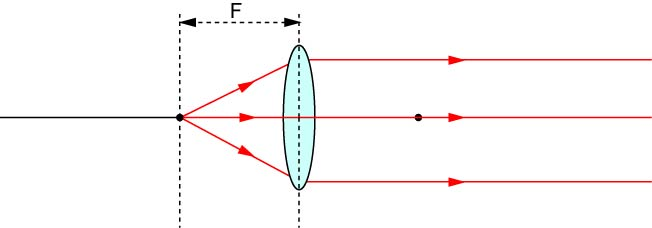
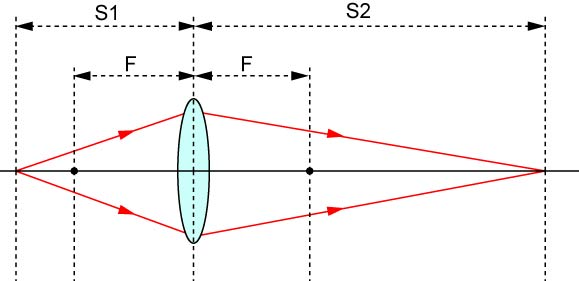
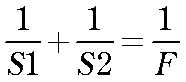
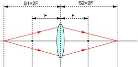
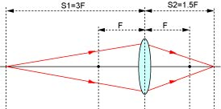
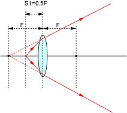

屈折率の異なる媒体を通すことにより，光の進行方向を変化させることができる，と前ページで紹介しました．
この変化具合は，光の媒体への角度に依存します．
そこで，うまい具合に媒体の表面の形状を変えることにより，1点から出た光を平行光にすることができます．

これが，レンズ，なのです．
屈折率の高い媒体，ガラスは凸型をしていることがわかります．
そして，1点から出発した光はレンズを通すことにより，平行光となるのです．
ここで，注意しなくてはならないのは，
レンズからのある距離からの光が平行光となる
のであって，どこから出発する光も平行光となるわけではありません．
また，この現象は，逆も起こりえるので，
平行光をレンズに通すと，ある一点に集光する
ということになります．
この
一点から発せられて，平行光となる点
もしくは，
平行光が一点に集光する点
のことを，
焦点
と呼びます．
焦点はレンズの左右にあります．
レンズの中心から焦点の位置までの距離を，
焦点距離
と呼びます．
凹型をしたレンズもありますが，今回は省略します．
市販されているほとんどのレンズは，大きな球の一部を切り取った表面形状をしています．
従って，
球面レンズ
と呼びます．
実は，球面レンズだと，1点に集まらないのです．
何で，そんなレンズを使うの？と聞かれると．．．球面に加工するのが一番簡単だから，だと思います．
理想の形状にガラスを加工，研磨するのはとても難しい（らしい）のです．
このずれのことを，収差，と呼びますが，これは別の機会に説明しましょう．
しかし，最近は，理想の形状をしたレンズ，
非球面レンズ
も出回ってきました．
しかし，まだ研究にはそれほど用いられていません．
では，焦点以外の点から発せられた光はレンズを通した場合，どうなるのでしょう？
これは，レンズの公式，に従います．


となります．
では，例を挙げてみましょう．
・焦点距離の2倍の場合
もし，F=１００mmで，S1＝２００mm，の場合，

１／２００＋１／S2＝１／１００
S2=２００
となります．
つまり，焦点距離の２倍の場合，同じ位置（レンズの向こう側ですが）に集光します．
・焦点距離の３倍の場合
もし，F=１００mmで，S1＝３００mm，の場合，

１／３００＋１／S2＝１／１００
S2=１５０
となります．
つまり，焦点距離の３倍の場合，集光する点は焦点距離の１．５倍となります．
長くすれば，短くなる傾向がありますね．
・焦点距離と等しい場合
もし，F=１００mmで，S1＝１００mm，の場合，
１／１００＋１／S2＝１／１００
S2=∞
となります．
無限大，ということは集光しない，と言うことなので，平行光と同じ意味となります．
つまり，焦点距離と等しい場合，平行光となります．
これは，さきほどレンズの性質で説明したことと同じですね．
逆も同様なので，
平行光（焦点距離が無限大）の光は焦点位置に集光する
となります．
・焦点距離より短い場合
たとえば，F=１００mmで，S1＝５０mm，の場合，
１／５０＋１／S2＝１／１００
S2=－１００
となります．
マイナスの値となります．
つまり，焦点距離より短い場合，レンズの向こう側には集光せず，発散していくのです．

逆に考えると，光の発せられた側に焦点を結ぶことになります．
次に，レンズによる像の拡大，について説明しましょう．